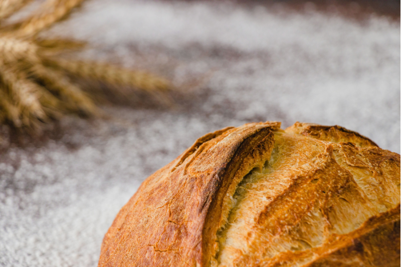

Notre savoir-faire
Venez découvrir nos pains artisanaux faits maison et nos pâtisseries originales.
Nous serons heureux de vous accueillir pour vous les faire déguster !
Nos pains sont fabriqués chaque jour.
Ils sont préparés avec des ingrédients de qualité.

Découvrez les métiers de la boulangerie sur Boulangerie Galabert
Nos produits phares
-
Pain tradition
Une baguette à la croûte fine et à la mie légère.
-
Pain au levain
Une fermentation lente pour une saveur authentique.
-
Pain au maïs
Une mie moelleuse et une note naturellement douce.